Hi-fi design · Overview and Work
All your work, on one clean board.
Stages across, your projects down, and proper cards in between. This round is rebuilt on your notes: real controls, colour back on the initiatives, and no more ornament. Everything below is live: click, drag and press keys inside any frame.
What changed, in your words
- "I'm less and less a fan of our title font." It is gone from this page. One UI face everywhere, and no big numbers. Counts are small and sit beside what they count.
- "I also don't like the double brass-colored line." Gone. One hairline.
- "Why not have real controls?" The sentence is gone. There is a toolbar: Group by, Filter, Find, Add.
- "I really liked the 'initiatives on top' view with the color coding." Each initiative has its colour back, and you can have them on top or inside their lanes. Open Display, top right, and flip it.
- "A big mess of lines." Only initiatives are lines now. A folded lane is one row of small counts.
- "Stacking rules are again not easy to understand." A stack now means one thing: a ticket and the pull requests its source confirms. Everything else is a plain row of cards.
- "Is a task that doesn't want me even shown in this interface?" It is, and nearly all of them are like that. "Wants you" means only that a Thread has an open question: a small mark on a rare card.
A clean card, and very little else
This is the card you liked, and it is now the base for everything. Every card is the same sheet at the same height. Height used to mean whose move it was, but most cards have no move, only a stage. So that idea is gone, along with the tabs that went with it.
A colleague's head shows only while a Thread is on the card. When a Thread has a question, the head raises its palm and the second line is the question. That is the whole mark. The board has no count of questions, and with none open it is simply complete. The sidebar's Waiting on you stays as it was, and Filter shows how many each value would leave, as it does for every value.
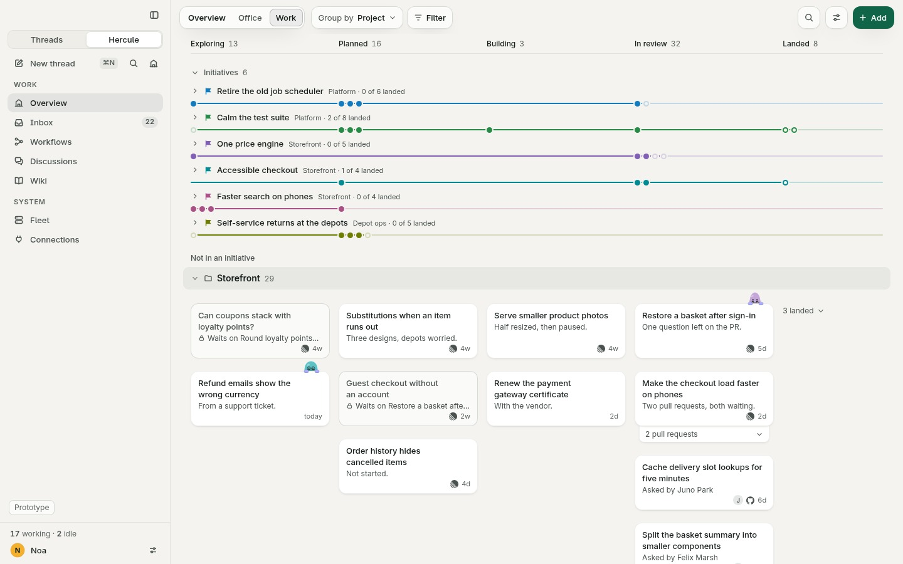
Real controls
Group by says what it is set to. Project and Initiative come first, then whatever your sources report: a Linear project, a Linear team, a GitHub repository. This is the lineage control you asked for: "show me everything from this Linear project" is one choice. The page has no code that knows those names. A plugin reports its data, and the rows appear.
Filter is one menu. "Has a question" and "Failed" are plain checkboxes at the top, then Project, Initiative, Source, and the same outside things as Group by. Each filter that is on sits in the toolbar as a chip you can remove.
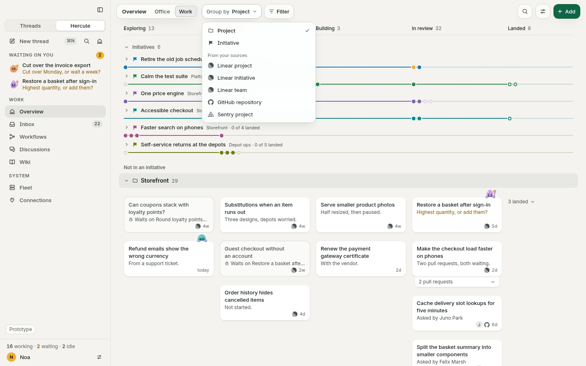
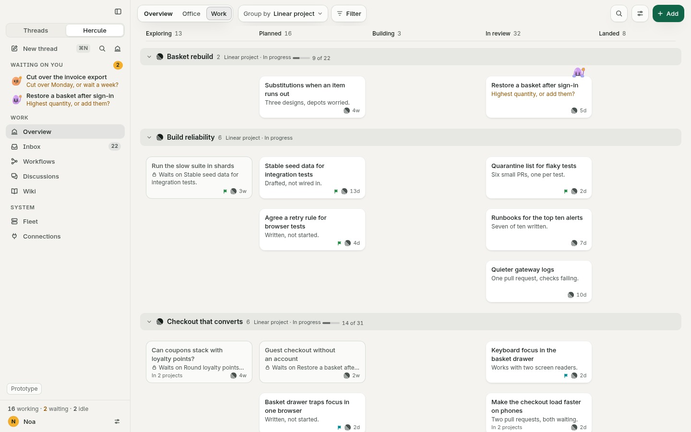
A ticket can sit in two projects, so under Group by it has a card in both, and it says so: "In 2 projects". The stage headers count Tasks, so nothing is counted twice.
Initiatives, in colour, in two places
You asked to play with both, so both are here on the same data. Open Display, top right.
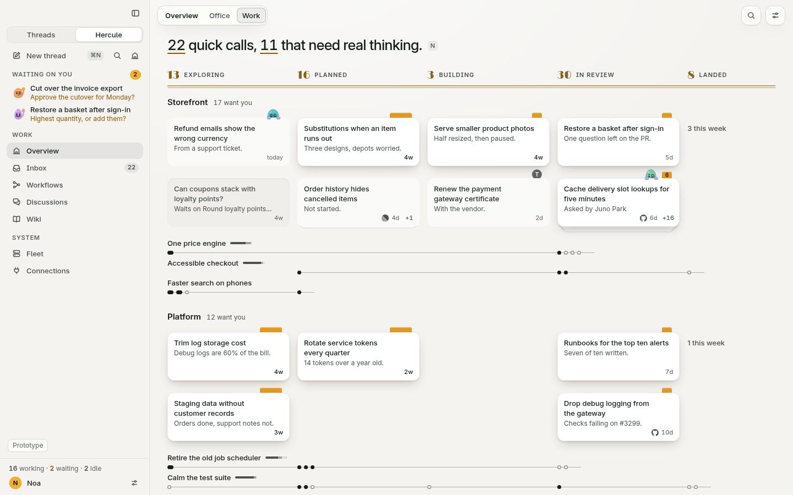
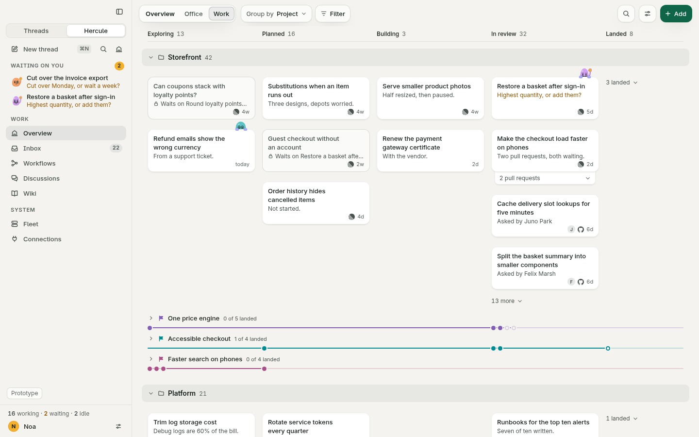
A line is bright as far as the initiative has come, and faint after that. A bead is a Task at its stage: rest on it to see what it is, drag it along to change its stage. Click the name to open the initiative into cards, in place.
A lane cannot be mistaken for an initiative
Your screenshot showed the problem: when everything folded, it all became the same thin line. So I tried three ways of telling them apart. All three give a lane heavier type and its own mark, and give an initiative a coloured flag and line.
Bands make a lane's head a full-width strip that owns everything under it, and they keep cards wide, so they are the default. Side labels bring back the left column of the lo-fi: every row's name sits there, and the stages start to its right. Surfaces, a soft panel per lane, I tried and cut: it nests sheet on panel on desk, and bands say the same with less. Bands and side labels are both in Display, so you can compare them.
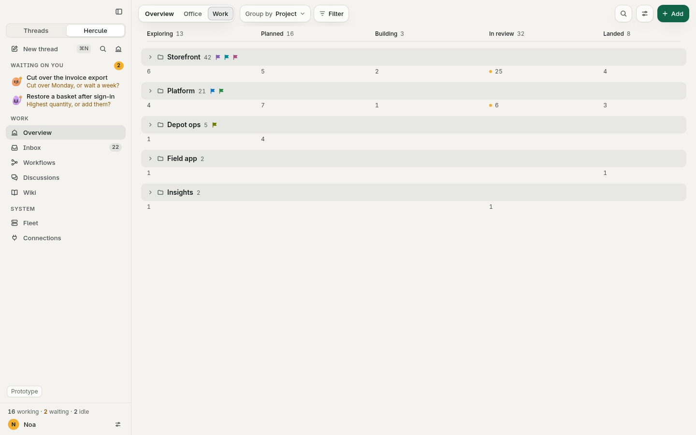
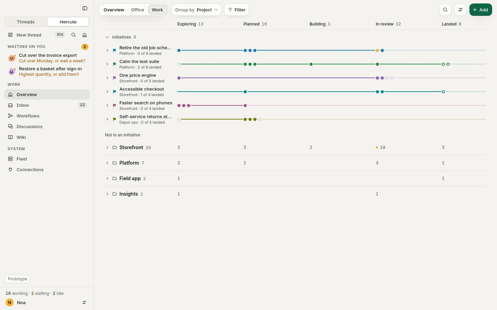
Rows of real cards, and a stack that means something
A cell shows four rows of real cards. Past that, a plain "13 more" opens the rest in place, and the lanes below make room. Nothing floats, and nothing opens in a small box. A card with a question or a failure always shows, however far down it would be.
A stack now exists only for a direct, confirmed link: a ticket and the pull requests its source says are its own. Sharing a repository never stacks anything. What the ticket holds peeks from under it as a sheet, and the sheet says why, in words: "2 pull requests". Click the card to open the card. Click the sheet to open the stack, in place.
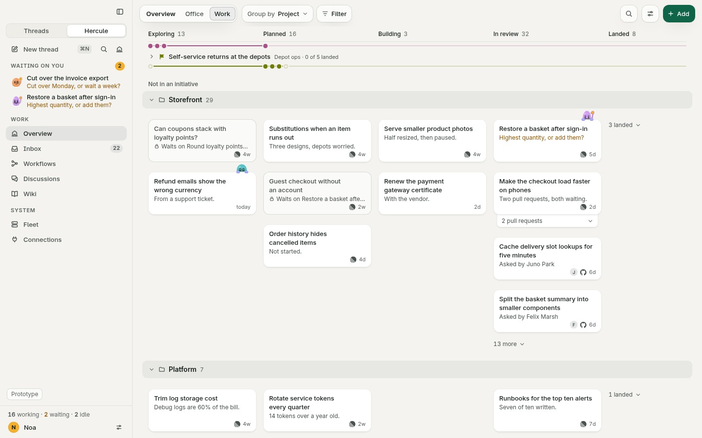
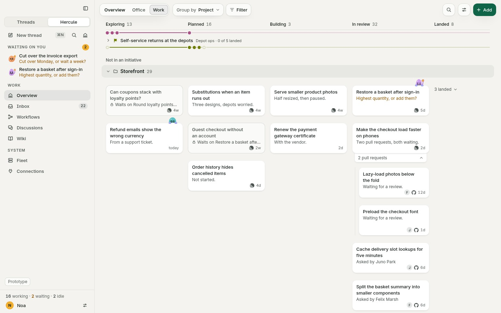
Add to Work
You can see a project's tickets in progress and remember "that one extra ticket", which Hercule may never have seen. So Add opens a sheet at the right, with the board still in view, and its main action is a search that reaches the source itself. Type words or an identifier, or paste a link. A link works from any source: it knows where it is from, and the tab follows.
You never have to wonder what is being searched. The box says "Search Linear", and the line under it says "Searches Web (team) in Linear". That scope is one quiet word you can change, and it opens on what you were looking at. Before you type, the list shows suggestions, and says that is what they are.
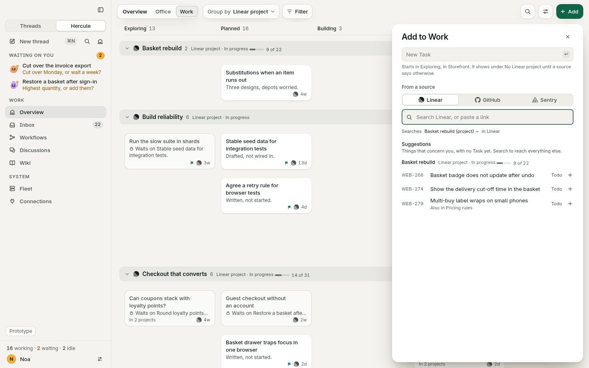
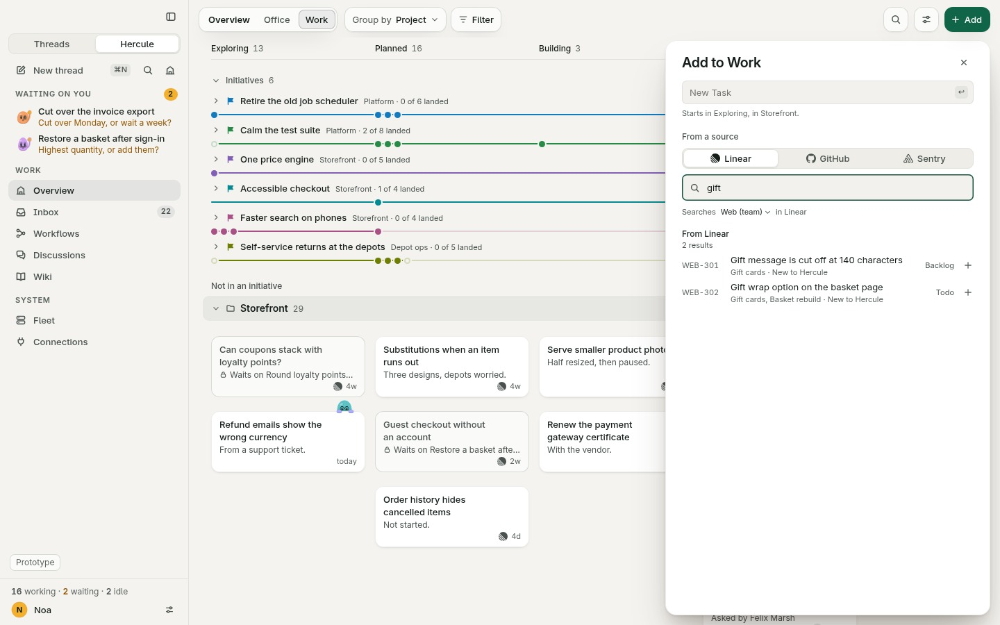
One click adds it. If Hercule had not seen it, it records the ticket first, as something you follow, then makes the Task. New Task sits at the top for everything else. In the Prototype tray, "Add" shows a search, a pasted link, a link you cannot open, and nothing found.
The outside world is a graph
A ticket can be part of two projects, and a team is another path, not a rung on a ladder. The details list everything a Task is part of, by every path, so no parent looks like the only one. Click one to see all its Tasks.
Linked lists direct links across sources. Who claims a link stays quiet until you rest on it. A reference found only in text sits apart, under Mentioned, and groups nothing. A link to something you cannot open says so, with no title, because its title was never read.
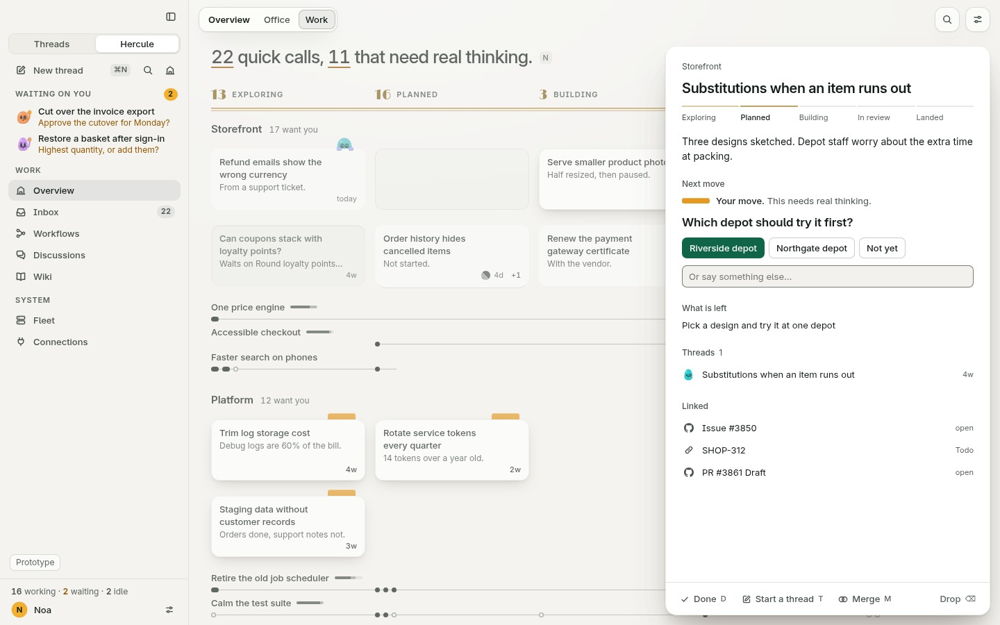
When a run fails
This stays its own state. A small marigold dot appears in the sidebar. One click opens Work filtered to what failed. The card leads its cell, its colleague wears a plaster, and the words say what broke and why. They stay, whatever you hover. The details offer Try again first.
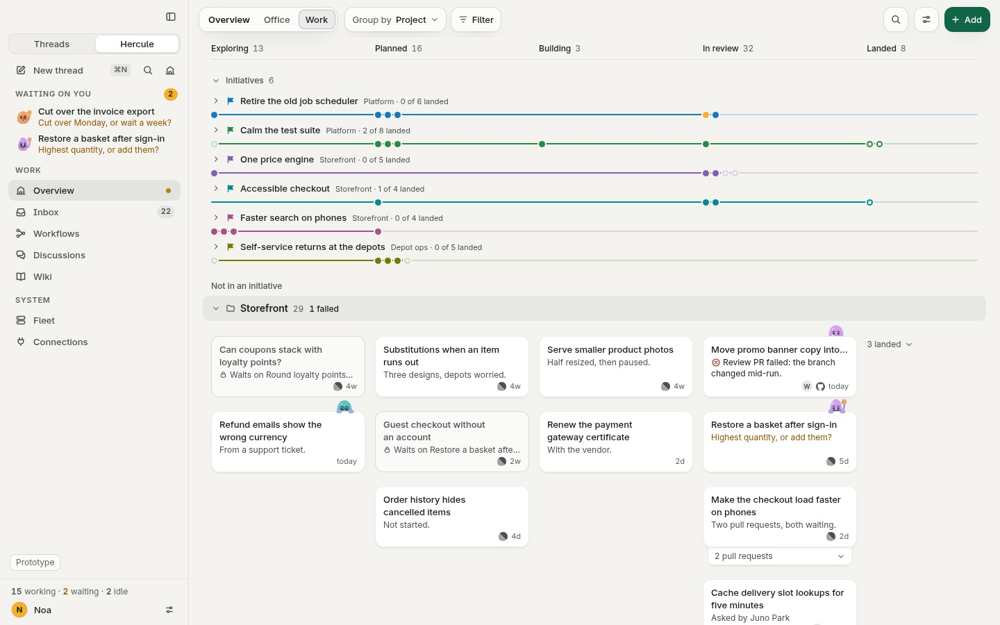
Still here
Dragging is still the star: a card lifts, follows your finger exactly, and a slot opens where it would land. Hold it still on another card, or hold Option, to merge. Opening a card grows that same sheet into its details. Nothing moves under your hand: a fact waits until the pointer has left, and the cause shows first. The morning replay plays what changed overnight. The Office is untouched, and switching to it walks the colleagues across. Every action has a key: press ? to see them.
Every state, drawn
What is new in the design system
- Clean first: the display face and brass leave the page. One hairline, plain headings.
- One sheet for every card, with a lit edge on dark desks because shadows say little there.
- A toolbar: Group by, Filter with chips, Find, Add, on the same glass as the pill.
- Initiative colours, one hue each at a lightness each theme family can carry, kept away from marigold and tomato.
- Lanes as side labels or bands, and a folded lane as one row of small counts.
- Stacks with their reason on the sheet, and overflow that opens in place.
- Relation rows: Part of, Linked, Mentioned, shared with the Inbox.
- Three springs, on one clock, in
js/motion.js:hand,travelandself, chosen by who caused the change.
What is weakest
- Initiatives on top cost height. Six rows take about 250px before the first card. With fourteen they fill the first screen. The heading folds the block, and "In lanes" avoids it, but you may want a different default.
- Side labels cost card width. About 40px per card at 1440. That is why bands are the default, and why a narrow window always gets bands.
- An open question is deliberately small. A palm at 30px and one line of words. The sidebar's Waiting on you carries the rest. If you miss one on the board, tell me, but I would not make it louder.
- A Task under two lanes has two cards. That is true to the graph and it says so on the card, but two copies of one thing can still surprise you, and dragging one only changes its stage.
- Add to Work assumes few sources. Three fit a segmented control. Ten would need a menu. Scoped lists are short here; a real Linear workspace may not be.
- The graph is written by hand. Every link here is invented and tidy. Real data will have partial records and much longer lists, and Group by with fifty projects has not been drawn.
- The six-word summary is a bet. Every summary here is written by hand. The design depends on a cheap model holding that length.
- It has only been looked at on Linux, at 1x. Motion has been judged from frames, not felt. Font smoothing on a Retina screen will change how the small type feels.
- The Threads face is a sketch of the app's, drawn so the failed dot has somewhere to sit. It is not a design.